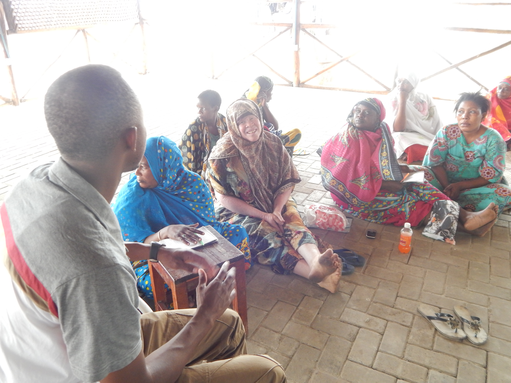
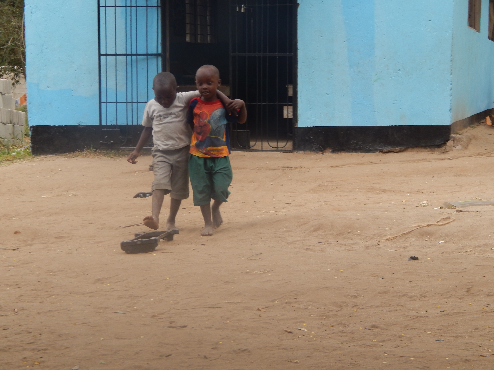

We Love Africa was founded in 2018 by Divine Mabika who has the social mission to improve the livelihoods of men, women and children in Africa. Our values are centred on self-sustainable development and better education that will create a positive and optimal environment in establishing a thriving community; self love, where there is trust, empathy, social justice and equity. We work with schools, orphanages and voluntary organisations for the development of communities. We focus on education, empowerment and well being as well as infrastructural support by providing children as adults to access to a library, teacher training and development through sports, activities and reading. We have the passion and the desire to help the people of African and build a better future for the generations to come.
…is dedicated to Educating, Empowering and Enriching the people of Africa. The communities we work in often lack access to education, health services, nutritious food, and basic training. Without these basic necessities it makes it difficult for individuals to feel empowered and better themselves. We recognise the importance of understanding the unique needs of everyone and want to work in effectively address these challenges. Our mission is to implement a long-term positive change by ensuring that our programs and activities are fit for purpose, that it is able to strengthen a community and build better relations.
...is to give African citizens the opportunity that they never had to become successful so that they realise their full potential through growth and development by initiating sustainable projects that will allow them to become self-sufficient. It is also about educating people to know that they have the freedom to challenge oppression through politics and uncensored speech, the freedom to choose how to live without the force of society and allowed to meet the needs of society without compromising.